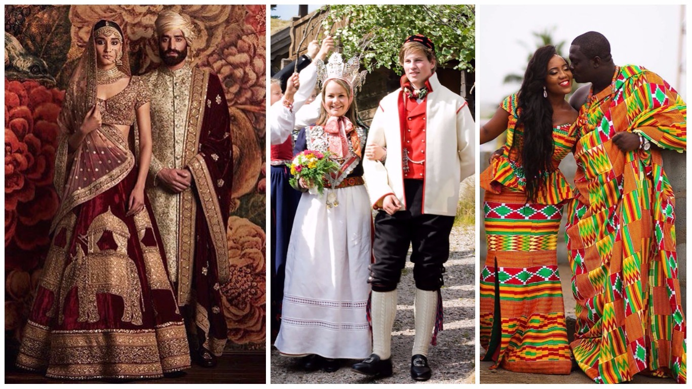

1.From the bride tossing her bouquet to wearing something old, new, borrowed, and blue, American wedding customs are still so popular today that even the most non-traditional couples happily take part.
2.Some are sweet, like how wedding guests in Sweden kiss the bride or groom anytime their new spouse leaves the room.
3.One Norwegian tradition states that the bride will wear an ornate silver and gold crown that has small charms dangling all around it. When she moves, the tinkling sound is supposed to deflect evil spirits.
